關於晴空塔城
➢ 晴空塔城介紹
東京晴空塔，又譯稱東京天空樹、新東京鐵塔，是位於日本東京都墨田區的電波塔，由東武鐵道及其子公司東武塔晴空塔共同籌建，於2008年7月14日動工，2012年2月29日完工、同年5月22日正式啟用。
其高度為634公尺，於2011年11月17日獲得金氏世界紀錄認證為「世界第一高塔」，成為全世界最高的塔式建築；目前亦為世界第三高的人工構造物，僅次於哈里發塔及默迪卡118。其兼具遊憩等複合式機能，並連同周圍街區開發為「東京晴空塔城」。
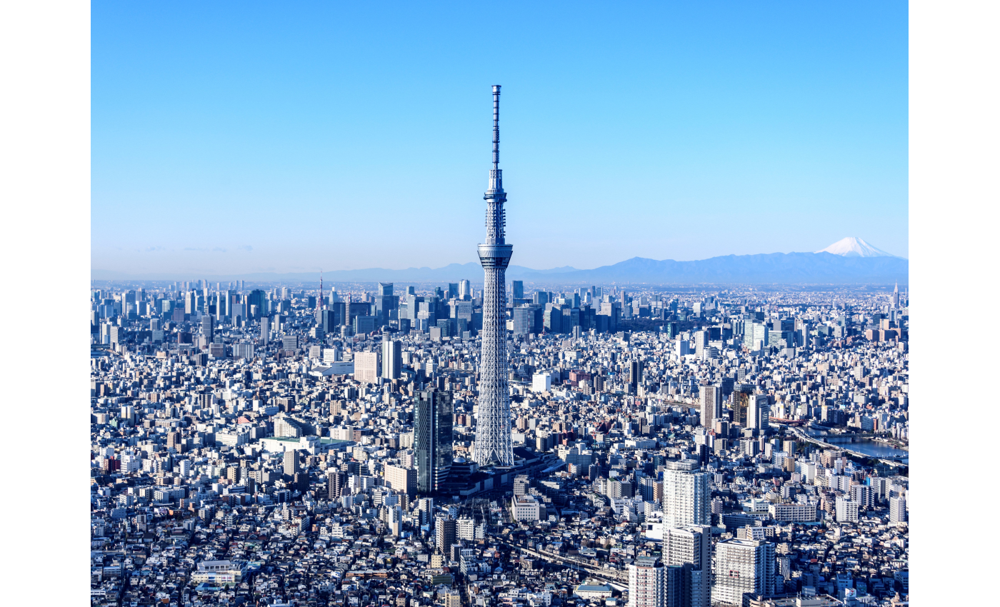
東京晴空塔不只是一座電波塔的興建，而是一個綜合都市開發計劃。除了鐵塔主體之外，東京晴空塔尚有其他附屬設施，構成一個完整的街區；原本整個開發計畫稱為「Rising East Project」，後由業主東武鐵道定名為「東京晴空塔城」。
其包含下列設施：
東京晴空街道：商業設施東京晴空塔附屬的購物中心，其涵蓋附屬大樓的多數區域，可容納約300個店舗。
東京晴空塔東塔：商辦、教育相關設施附屬大樓東側的高樓層部分；其中13至29樓為出租辦公室。
柯尼卡美能達天文館「天空」：位於附屬大樓東側，由柯尼卡美能達經營，為多功能型圓頂電影院。
墨田水族館：位於附屬大樓西側，定位為一座「都市型水族館」。
東京晴空塔：主設施／電波塔位於街區中央處。
➢ 交通方式
東京晴空塔與地鐵「押上站」相連，因此只要想辦法到押上站就對囉，下面簡單列幾個重要地鐵站交通方式。
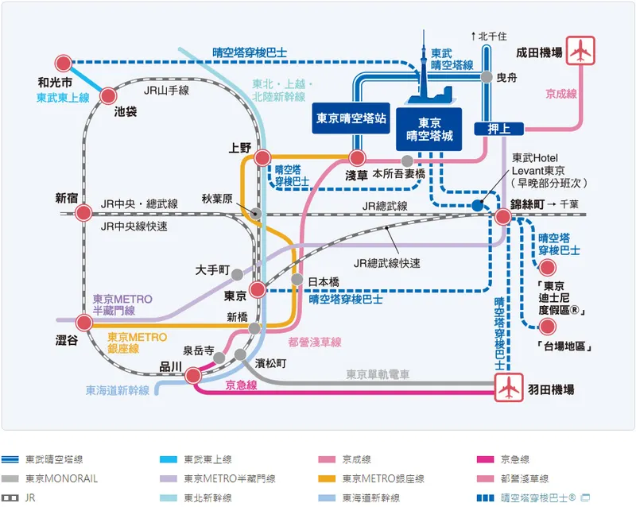
淺草：搭乘都營淺草線直達「押上站」約3分鐘；或由淺草站步行15分鐘即達。
上野：地鐵銀座線至淺草站，轉都營淺草線至「押上站」約10分鐘；或搭乘晴空塔穿梭巴士，約30分鐘。
澀谷：搭乘地鐵半藏門線直達「押上站」，約30分鐘。
其他地鐵站：設法搭乘半藏門線、都營淺草線直達「押上站」；或搭銀座線至淺草，再轉都營淺草線至「押上站」。
樓層介紹
➢ 東京晴空塔
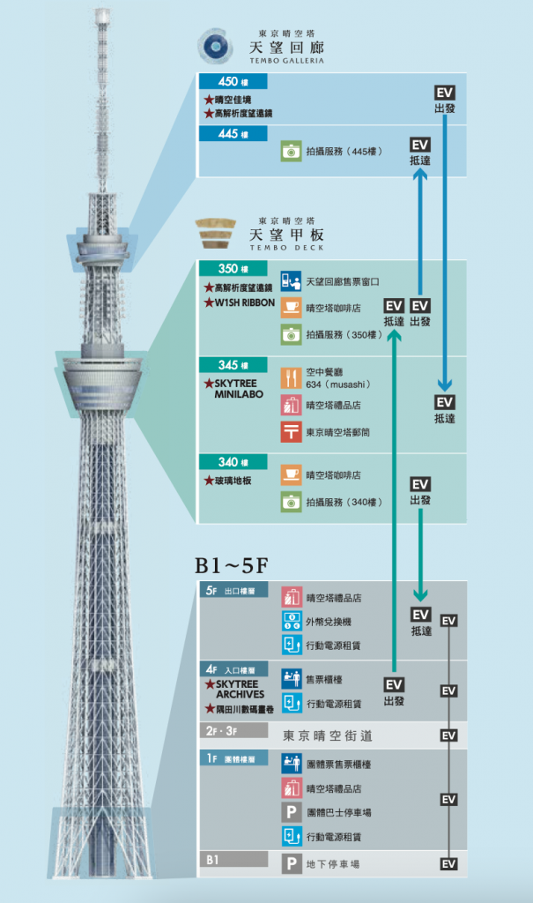
說到「東京晴空塔」的招牌，就是距離地面450公尺高的「天望回廊」了。在萬里無雲的晴天，世界遺產富士山和東京灣的壯闊絶景，一覽無遺。隨著太陽西沈天色漸暗，天空也因夕陽而暈染成一片紅，呈現出無以言喻的夢幻氛圍。
「東京晴空塔天望甲板」，是由「340樓」、「345樓」、「350樓」這3個樓層所構成。
在340樓的樓層，不僅能透過從腳邊直達天花板、高達5公尺的巨大玻璃窗欣賞一望無際的全景，還能自腳下的透明玻璃地板，俯瞰令人心跳加倍的高空景觀。再往上到「345樓」、「350樓」，設有咖啡廳和餐廳，相信在美景伴隨下一邊享用美食，一定會成為很棒的回憶。
四樓就是售票口，排隊時間視現場情況和節日而定。也可以在網路上購買票券，在Klook、Kkday買票，票價只要現場9折
在買好門票的人到位於「晴空塔4F售票處」，用機器刷手機QR Code憑證兌換門票，即可入場。在網路買早鳥晴空塔門票不只省錢、免排隊，最晚在前一天購買就可以了！
➢ 東京晴空街道
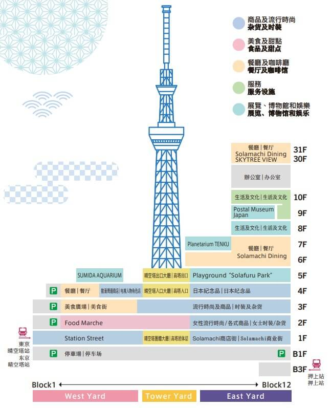
上左圖是東京晴空街道的樓層示意圖，可以看見除了最中央的晴空塔塔樓層，另外還分為東塔和西塔。
三塔在1~4樓都是相通的，東塔靠近押上站，西塔靠近東京晴空塔站，基本上除了東塔11～29樓是辦公區域之外，其他樓層都有可逛之處。
在美食購物行程以外，需要特別介紹的是水族館和天文館！
墨田水族館位在西塔5、6樓。這裡使用了人工海水，排除了使用大型運輸工具運送海水會造成的碳排放，還可以使水質保持穩定，為水生生物提供優良的生長環境。
柯尼卡美能達天文館「天空」位在東塔7樓。這就是常常在日劇或是漫畫裡面看到的天文館，提供「城市內的星空」給需要被治癒的人們。
觀景台
➢ 門票購買
來到晴空塔4樓售票櫃台，準備排隊買票或持天望迴廊預購票憑證換票～
全是正在買票要上去天望甲板或天望迴廊的遊客，繞了好幾圈。有先購買預售票，就可以從專門的兌換櫃台換票直接上去。建議大家可以先買好預售票，以免現場排隊太久，連夕陽都看不到就太可惜了。
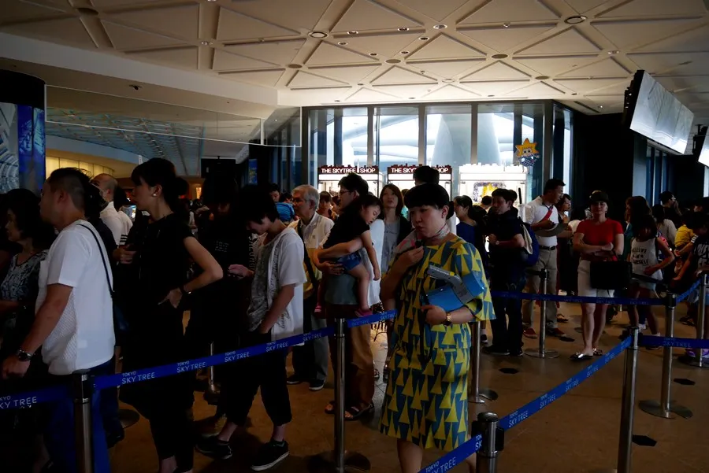
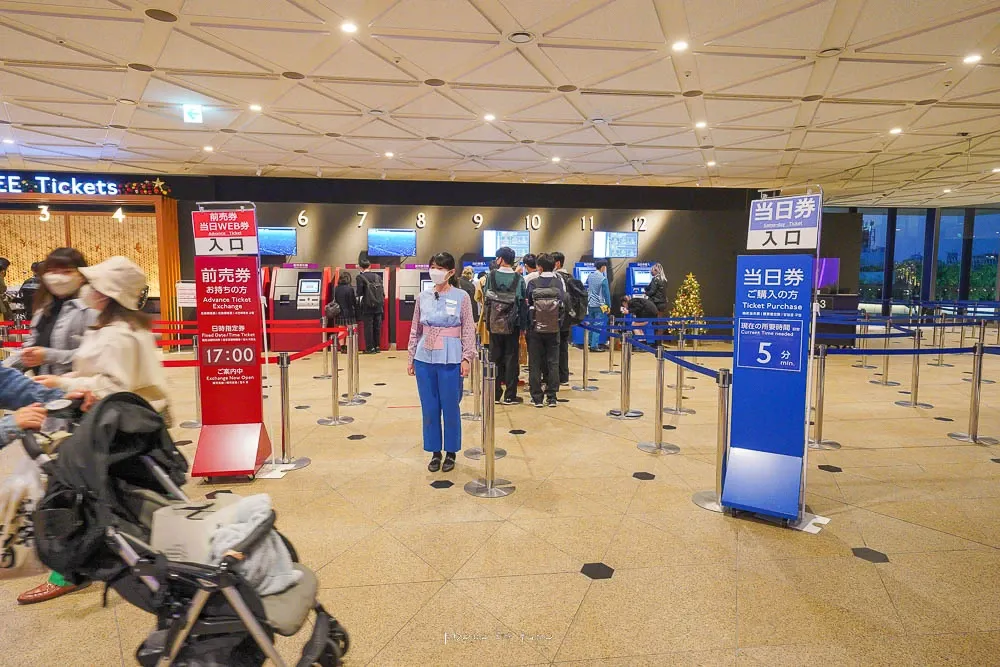
晴空塔門票 (天望甲板)：
平日2,400日圓、假日2,600日圓；「網路早鳥票」平日2,100日圓、假日2,300日圓，現省300日圓。
晴空塔門票 (天望甲板＋天望迴廊)：
平日3,500日圓、假日3,800日圓；「網路早鳥票」平日3,100日圓、假日3,400日圓，現省400日圓。
➢ 天望甲板
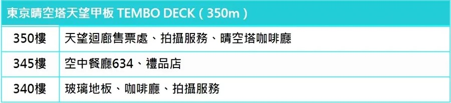
雖然電梯是直達350樓，但天望甲板其實涵蓋了340、345、350樓，總共三層區域。
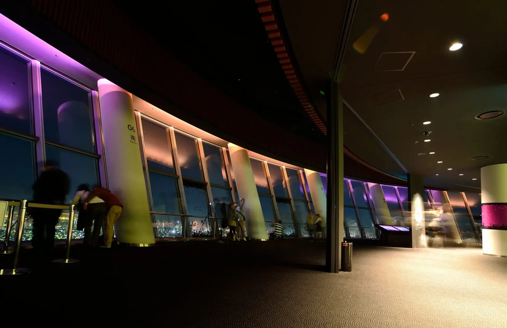
走出電梯後最先看見的就是5公尺高的360度環形巨大玻璃帷幕，可以無死角的環顧東京市容，也可以看見各大知名景點，包含幾乎就在腳下的淺草寺、東京鐵塔等，如果天氣好甚至還可以望見富士山呢！
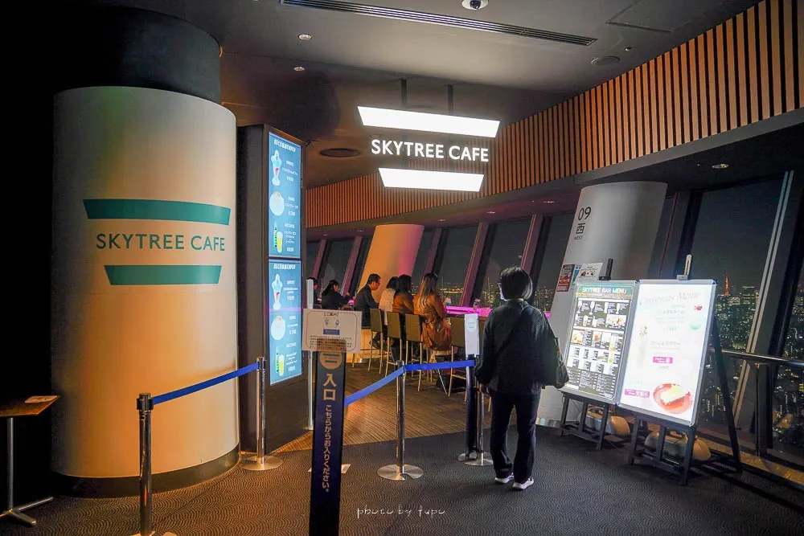
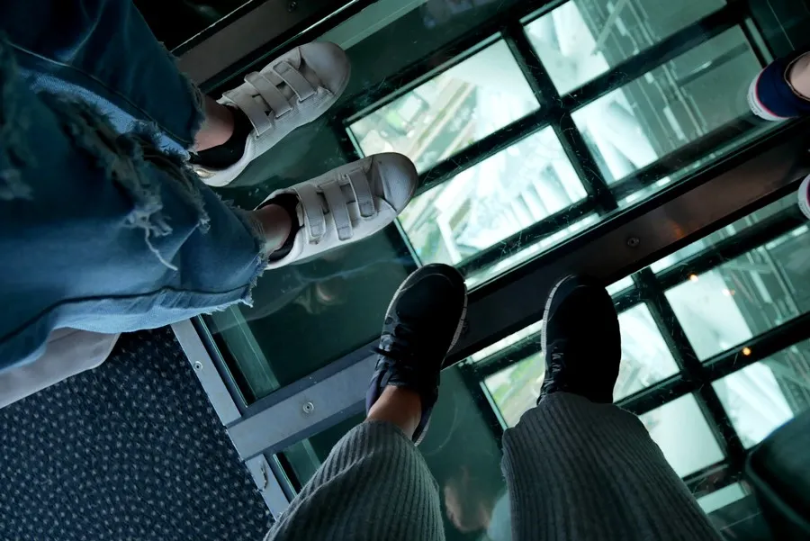
340樓和350樓都有設置咖啡廳，供遊客一邊享用輕食甜點，一邊欣賞風景。飲品價位約在¥550～¥1,000左右，提供吧台、餐桌座位或是立食點，基本上沒有限制用餐時間，不過人潮眾多的話還是會稍微控制。
最後別忘了到340樓體驗玻璃地板，雖然小小一塊，但是可以清晰的直接看到腳下地面，對於懼高症患者來說還是有點挑戰。
⭐ 如果先前沒有買套票，臨時想要上去天望回廊的話，在350樓可以加購票卷，假日成人票¥1,200、青少年¥900、兒童¥550。
➢ 天望回廊
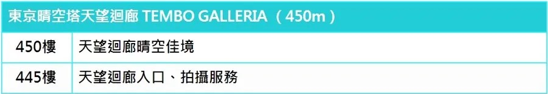
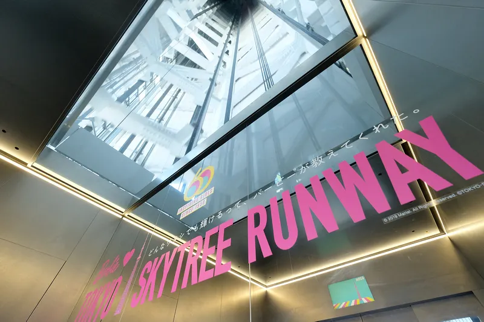
從350樓搭乘上行的透明電梯可以直達445樓，再走過一小段環形坡道，就抵達450樓的天望回廊啦！
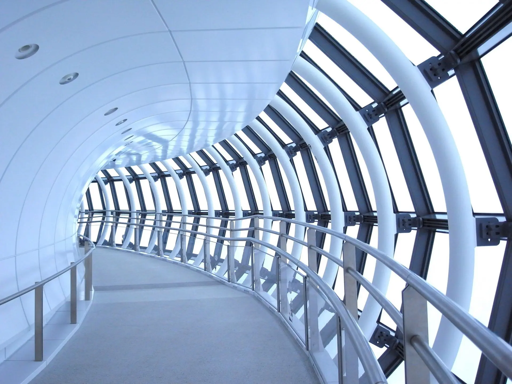
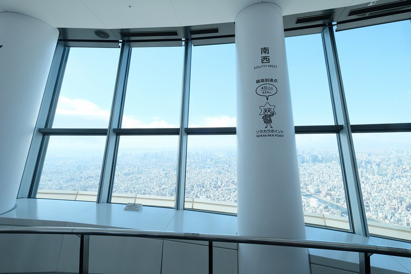
這裡比天望甲板高了100公尺，雖然玻璃較小片，但視野更好更廣，夕陽時間更是一位難求，有打算在這層樓看夕陽的人要記得先來卡位。
350樓還有一個被稱為「晴空佳境」的拍照點，就在制高點451.2公尺旁，這裡用光和玻璃共同演繹出神奇的開闊感和浮游感，有興趣可以來試試！
晴空塔城
1. Solamachi購物中心
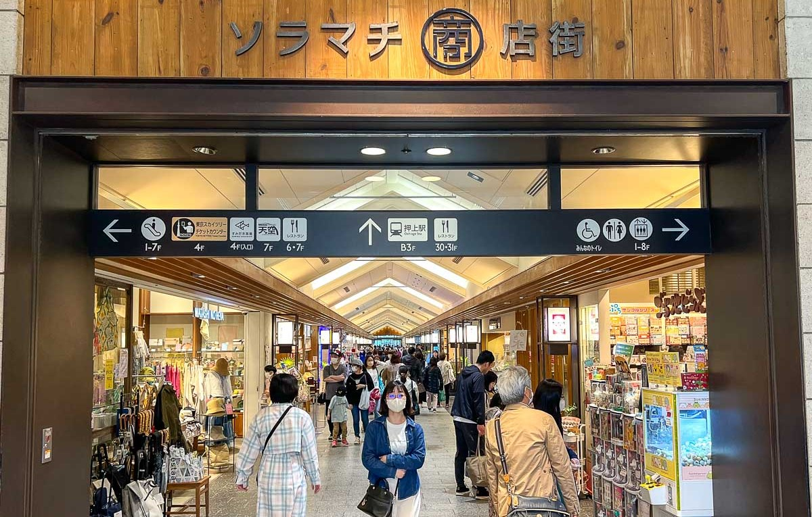
晴空塔與押上站連結，同時有Solamachi購物中心，集結時尚品牌與特色料理，包含Disney store、文具雜貨loft、水果派Qu’il Fait Bon等，甚至還有店家推出晴空塔限定的特色商品，如Quil Fait Bon水果派上的晴空塔叉子、廣受歡迎的伴手禮Tokyo Banana豹紋限定口味等～
2. 寶可夢中心
雖然晴空塔的寶可夢中心不是最大間的，但擁有4000種類以上的商品也算是非常完備的商店，玩偶、方巾、衣服、文具到伴手禮，基本上想買的都可以在這裡找到！
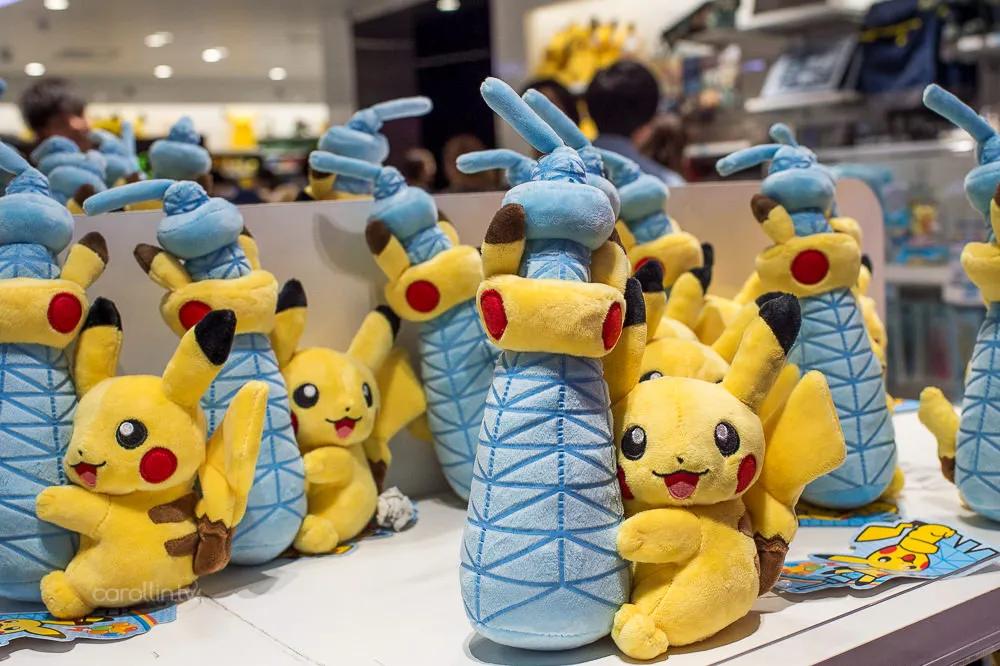
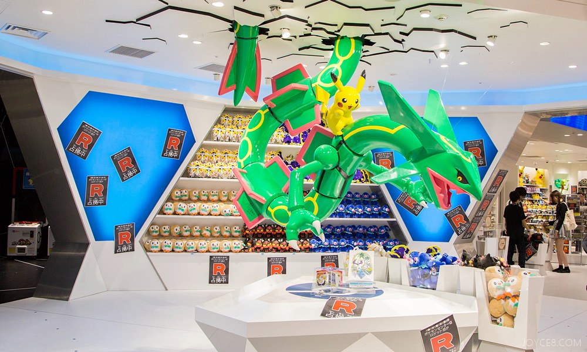
3. 墨田水族館
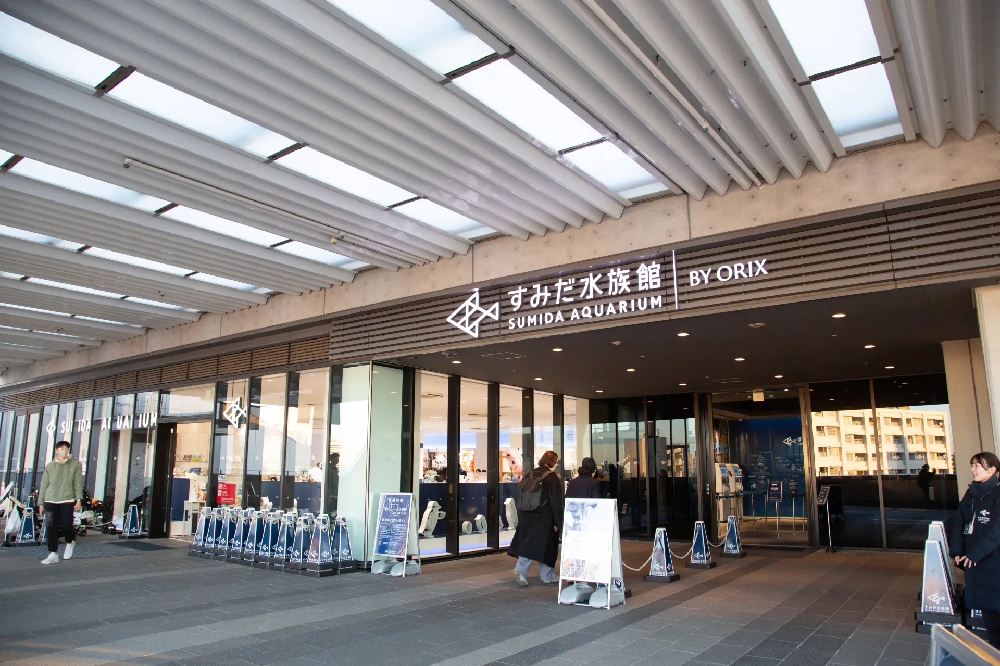
墨田水族館位在西塔5、6樓。這裡使用了人工海水，排除了使用大型運輸工具運送海水會造成的碳排放，還可以使水質保持穩定，為水生生物提供優良的生長環境。
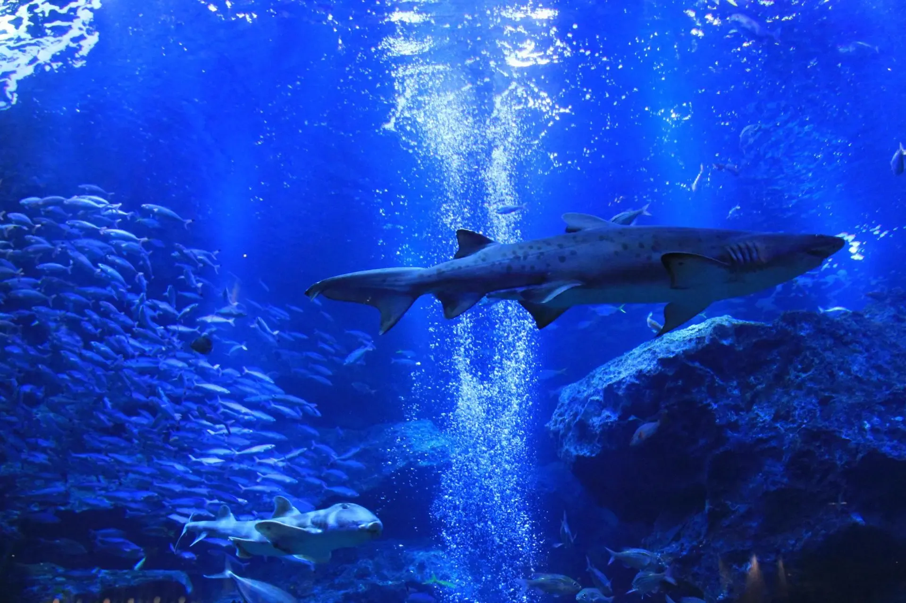
雖然整個水族館並不算太大，但也是五臟俱全，有水母區、珊瑚礁區、模擬小笠原水下世界的東京大水槽區，以及最收歡迎的開放式企鵝館。有安排晴空塔行程的話可以順道來墨田水族館逛逛。
墨田水族館位在西塔5、6樓。這裡使用了人工海水，排除了使用大型運輸工具運送海水會造成的碳排放，還可以使水質保持穩定，為水生生物提供優良的生長環境。
雖然整個水族館並不算太大，但也是五臟俱全，有水母區、珊瑚礁區、模擬小笠原水下世界的東京大水槽區，以及最收歡迎的開放式企鵝館。有安排晴空塔行程的話可以順道來墨田水族館逛逛。
水族館的收費方式是成人¥2,500、15～17歲¥1,800、6～14歲¥1,200、兒童¥800，但更推薦的是使用晴空塔＋水族館套票，成人最低只要$1,063就可以暢遊天望甲板＋天望迴廊＋墨田水族館，非常划算。
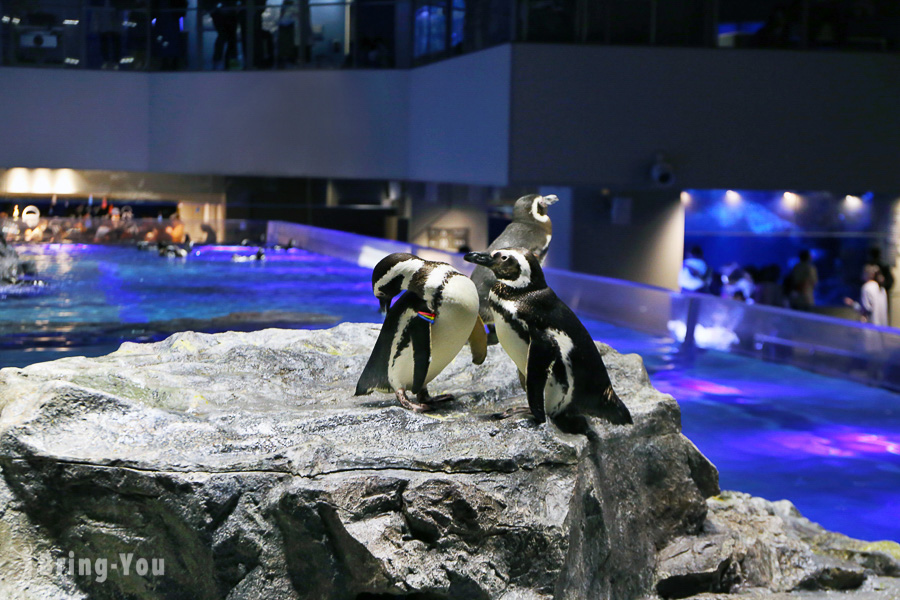
4. 柯尼卡美能達天文館「天空」
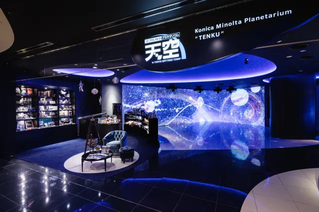
「天空」位在東塔7樓。這就是常常在日劇或是漫畫裡面看到的天文館，提供「城市內的星空」給需要被治癒的人們。
你有多久沒有仰望星空了呢？今天，讓我們慢慢仰望星空。
帶著這樣的標語，「天空」提供影像搭配音樂甚至香氛，讓人沉浸在浩瀚宇宙之中。
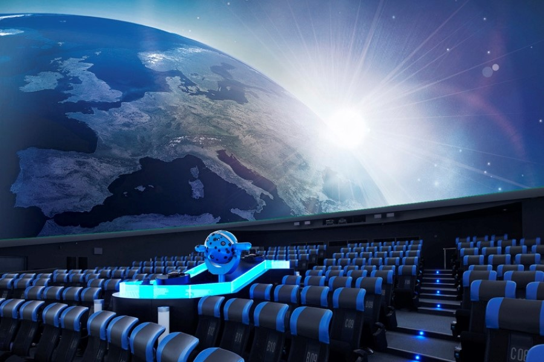
天文館票價依節目而訂，普通座位約在¥1.600以上；若是想要享受唯三的可躺式新月座位，則為¥4.200以上。
「天空」位在東塔7樓。這就是常常在日劇或是漫畫裡面看到的天文館，提供「城市內的星空」給需要被治癒的人們。
你有多久沒有仰望星空了呢？今天，讓我們慢慢仰望星空。
帶著這樣的標語，「天空」提供影像搭配音樂甚至香氛，讓人沉浸在浩瀚宇宙之中。
天文館票價依節目而訂，普通座位約在¥1.600以上；若是想要享受唯三的可躺式新月座位，則為¥4.200以上。
5. 東京晴空塔專賣店
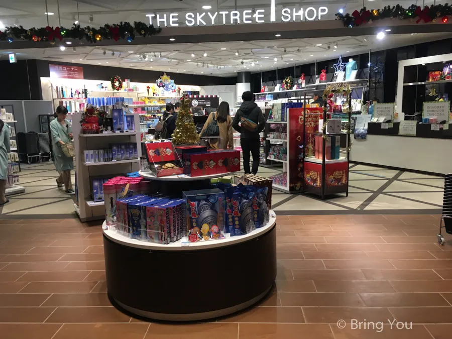
從展望台出口出來會直通「東京晴空塔專賣店（The Skytree Shop）」，這裡是晴空塔官方禮品店，可以買晴空塔天空樹造型相關的限定版紀念品，東京晴空塔專賣店在晴空塔裡共有1F、5F、天望甲板 345F三間店，都是在「塔樓館」。
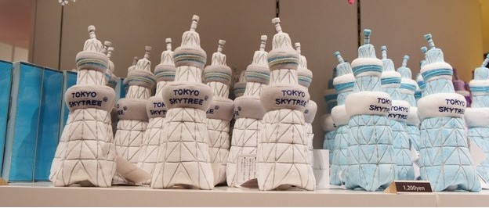
▼晴空塔天空樹巧克力
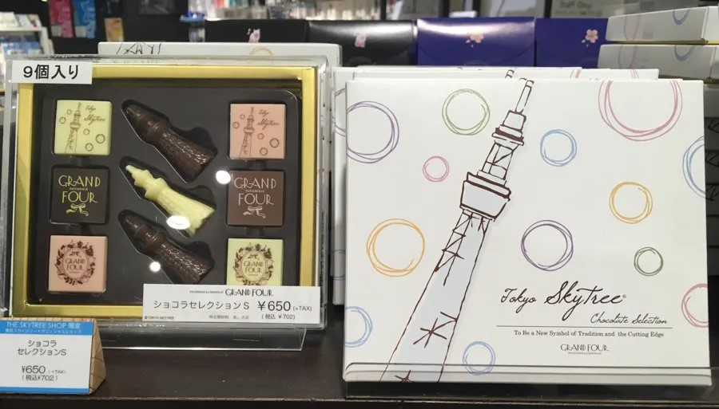
▼天空樹的年輪蛋糕
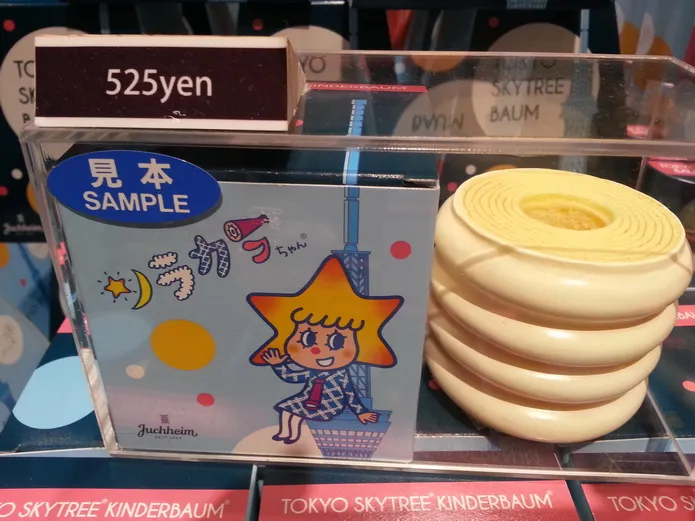
▼晴空塔天空樹蛋捲
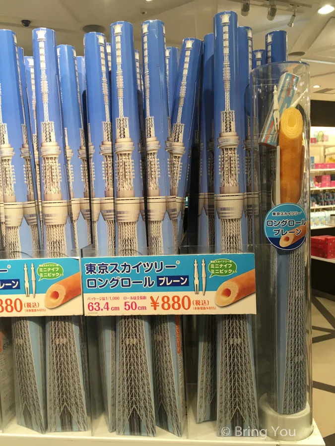
6. 敘敘苑燒肉
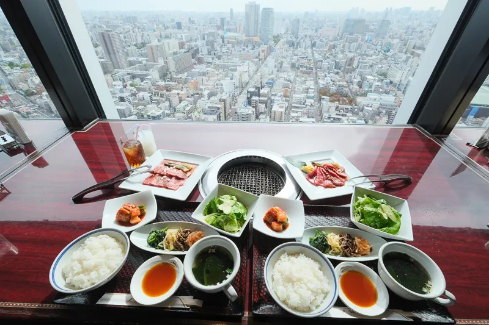
大啖晴空塔美食吧～位於30F的敘敘苑燒肉坐擁超美高空景觀，是晴空塔人氣No.1美食。
午間套餐只要3,500日圓起 (晚間套餐要15,000日圓起)，CP值無敵高，官網約90天前開放預約，記得準時上去搶喔！